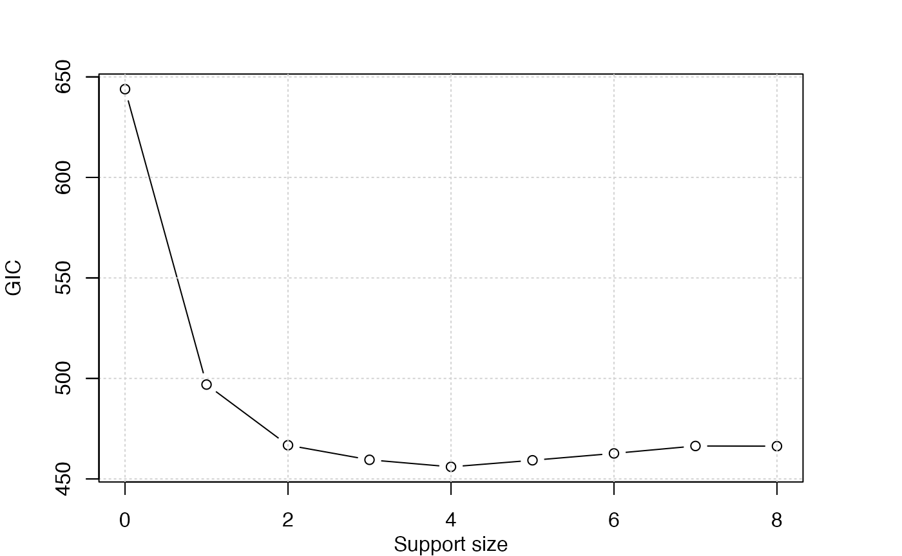

Logistic Regression
Logistic regression is used to predict binary results. For example, to predict the tumor is benign (1) or not (0); to predict the email is spam (1) or not (0). Logistic regression function is an s-shaped curve modeling the posterior probability \(p\) via a linear combination of the predictors. The curve is dedined as \(p = \frac{1}{1+\exp(-\eta)}\) where \(\eta = \beta_0+x\beta_1\).
The logistic regression model has this form: \[ \log(p/(1-p)) = \beta_0 + x\beta. \]
The quantity \(\log(p/(1-p))\) is called the logarithm of the odd, also called log-odd or logit.
Titanic Dataset
We are going to apply best subset selection to the Titanic dataset obtained here https://www.kaggle.com/c/titanic/data. The training dataset consists of data about 889 passengers, and the goal of the competition is to predict the survival based on features including the class of service, the sex, the age etc. First, let’s have a look at the dataset and exam if there is any missing data.
## PassengerId Survived Pclass
## 1 1 0 3
## 2 2 1 1
## 3 3 1 3
## 4 4 1 1
## 5 5 0 3
## 6 6 0 3
## Name Sex Age SibSp Parch
## 1 Braund, Mr. Owen Harris male 22 1 0
## 2 Cumings, Mrs. John Bradley (Florence Briggs Thayer) female 38 1 0
## 3 Heikkinen, Miss. Laina female 26 0 0
## 4 Futrelle, Mrs. Jacques Heath (Lily May Peel) female 35 1 0
## 5 Allen, Mr. William Henry male 35 0 0
## 6 Moran, Mr. James male NA 0 0
## Ticket Fare Cabin Embarked
## 1 A/5 21171 7.2500 <NA> S
## 2 PC 17599 71.2833 C85 C
## 3 STON/O2. 3101282 7.9250 <NA> S
## 4 113803 53.1000 C123 S
## 5 373450 8.0500 <NA> S
## 6 330877 8.4583 <NA> Q## [1] 179The na.omit() function allows us to delete the rows that contain any missing data. After that, we get a total of 714 samples left.
## [1] 712 8Then we change the factors into dummy variables with the model.matrix() function. Note that the abess function will automatically include the intercept.
dat <- model.matrix(~., dat)[, -1]
dat <- as.data.frame(dat)We split the dataset into a training set and a test set. The model is going to be built on the training set and later We will test the model performance on the test set.
Best Subset Selection for Logistic Regression
The abess() function in the abess package allows you to perform best subset selection in a highly efficient way. You can call the abess() function using formula just like what you do with lm(). Or you can specify the design matrix x and the response y.
Interpret the Result
Hold on, we aren’t finished yet. After get the estimator, we can further do more exploring work. The output of abess() function contains the best model for all the candidate support size in the support.size. You can use some generic function to quickly draw some information of those estimators.
# draw the estimated coefficients on all candidate support size
coef(abess_fit)## 9 x 9 sparse Matrix of class "dgCMatrix"
## 0 1 2 3 4 5
## (intercept) -0.3530971 1.158781 2.9213405 4.23195975 4.76830044 4.85380932
## Pclass . . -0.7952709 -1.01705719 -1.03770029 -1.00849524
## Sexmale . -2.545075 -2.5818944 -2.51198922 -2.60544775 -2.59656106
## Age . . . -0.02923673 -0.03712932 -0.03672227
## SibSp . . . . -0.36190186 -0.35770162
## Parch . . . . . .
## Fare . . . . . .
## EmbarkedQ . . . . . .
## EmbarkedS . . . . . -0.21507577
## 6 7 8
## (intercept) 5.112850326 5.106984139 5.083419610
## Pclass -1.076524938 -1.080872102 -1.088719578
## Sexmale -2.610626444 -2.600190152 -2.598294351
## Age -0.037469962 -0.037121584 -0.037070490
## SibSp -0.339009757 -0.350547520 -0.352463001
## Parch . 0.048198941 0.051065970
## Fare -0.001998085 -0.002237775 -0.002189826
## EmbarkedQ . . 0.209319312
## EmbarkedS -0.245365304 -0.255782087 -0.218658734
# get the deviance of the estimated model on all candidate support size
deviance(abess_fit)## [1] 321.9560 246.5820 229.6078 224.0843 220.4441 220.1834 220.0022 219.9602
## [9] 219.9189
# print the fitted model
print(abess_fit)## Call:
## abess.default(x = train[, -1], y = train$Survived, family = "binomial")
##
## support.size dev GIC
## 1 0 321.9560 643.9119
## 2 1 246.5820 496.9456
## 3 2 229.6078 466.7791
## 4 3 224.0843 459.5137
## 5 4 220.4441 456.0149
## 6 5 220.1834 459.2754
## 7 6 220.0022 462.6947
## 8 7 219.9602 466.3923
## 9 8 219.9189 466.3097The plot.abess() function helps to visualize the change of models with the change of support size. There are 5 types of graph you can generate, including coef for the coefficient value, l2norm for the L2-norm of the coefficients, dev for the deviance and tune for the tuning value. Default if coef.
plot(abess_fit, label=T)
The graph shows that, beginning from the most dense model, the second variable (Sex) is included in the active set until the support size reaches 0.
We can also generate a graph about the tuning value. Remember that we used the default GIC to tune the support size.
plot(abess_fit, type="tune")
The tuning value reaches the lowest point at 4. And We might choose the estimated model with support size equals 6 as our final model.
To extract any model from the abess object, we can call the extract() function with a given support.size. If support.size is not provided, the model with the best tuning value will be returned. Here we extract the model with support size equals 6.
## List of 7
## $ beta :Formal class 'dgCMatrix' [package "Matrix"] with 6 slots
## .. ..@ i : int [1:4] 0 1 2 3
## .. ..@ p : int [1:2] 0 4
## .. ..@ Dim : int [1:2] 8 1
## .. ..@ Dimnames:List of 2
## .. .. ..$ : chr [1:8] "Pclass" "Sexmale" "Age" "SibSp" ...
## .. .. ..$ : chr "4"
## .. ..@ x : num [1:4] -1.0377 -2.6054 -0.0371 -0.3619
## .. ..@ factors : list()
## $ intercept : num 4.77
## $ support.size: num 4
## $ support.vars: chr [1:4] "Pclass" "Sexmale" "Age" "SibSp"
## $ support.beta: num [1:4] -1.0377 -2.6054 -0.0371 -0.3619
## $ dev : num 220
## $ tune.value : num 456The return is a list containing the basic information of the estimated model.
Make a Prediction
Prediction is allowed for all the estimated model. Just call predict.abess() function with the support.size set to the size of model you are interested in. If a support.size is not provided, prediction will be made on the model with best tuning value. The predict.abess() can provide both link, stands for the linear predictors, and the response, stands for the fitted probability. Here We will predict the probability of survival on the test.csv data.
fitted.results <- predict(abess_fit, newx = test, type = 'response')If we chose 0.5 as the cut point, i.e, we predict the person survived the sinking of the Titanic if the fitted probability is greater than 0.5, the accuracy will be 0.80.
fitted.results <- ifelse(fitted.results > 0.5,1,0)
misClasificError <- mean(fitted.results != test$Survived)
print(paste('Accuracy',1-misClasificError))## [1] "Accuracy 0.79746835443038"We can also generate an ROC curve and calculate tha AUC value. On this dataset, the AUC is 0.87, which is quite close to 1.
library(ROCR)
fitted.results <- predict(abess_fit, newx = test, type = 'response')
pr <- prediction(fitted.results, test$Survived)
prf <- performance(pr, measure = "tpr", x.measure = "fpr")
plot(prf)
auc <- performance(pr, measure = "auc")
auc <- auc@y.values[[1]]
auc## [1] 0.8739505